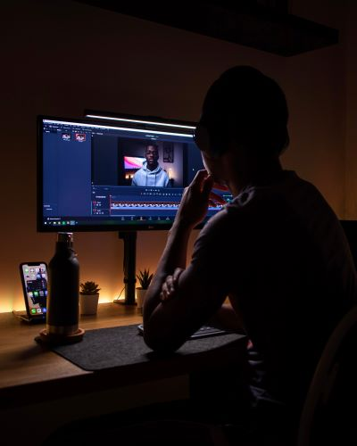

Saya memiliki keahlian dalam merancang antarmuka pengguna yang
menarik dan fungsional. Dengan Figma, saya dapat membuat
prototipe yang interaktif, membuat alur pengguna yang efisien.

Video Editing
Saya adalah seorang Video Editor dengan pengalaman yang kuat
dalam menghasilkan konten visual yang menarik dan berkualitas.
dan konten media sosial
Fullstack Web
Saya adalah seorang Pengembang Web Full-Stack yang berkomitmen
untuk menciptakan solusi web yang inovatif dan berkualitas
tinggi.